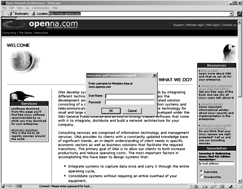

| Securing and Optimizing Linux: RedHat Edition -A Hands on Guide | ||
|---|---|---|
| Prev | Chapter 29. Software -Network Server, web/Apache | Next |
This step is necessary only if you think that you'll use an access file authentication system for your web site. Access file authentication is used when you have the need to protect some part of your web site with a user password. With Apache, a lot of options exist to protect your site with usernames and passwords.
The dbmmanage program utility of Apache can be used to create and update usernames and passwords of HTTP users. This method use a DBM format files that is the fastest mechanism when you have thousands users to manage in your password file. First of all, it's important to change the permission of this program to be 0750/-rwxr-x---, writable only by the super-user root, readable and executable by group and nothing for the others.
To change the permissions on the dbmmanage program, use the following command:
[root@deep ]/# chmod 750 /usr/bin/dbmmanage
|
To create a username and password, use the following command:
[root@deep ]/# /usr/bin/dbmmanage /etc/httpd/.dbmpasswd adduser username
|
New password:
Re-type new password:
User username added with password encrypted to l4jrdAL9MH0K.
|
If you use the dbmmanage utility with your Apache web server to create passwords and usernames, don't forget to include in your /etc/httpd/conf/httpd.conf configuration file the part of your web site you need to protect with user password authentication: Edit the httpd.conf file vi /etc/httpd/conf/httpd.conf and add the following lines to protect the private directory of your web site ona with user password authentication:
<Directory "/home/httpd/ona/private">
Options None
AllowOverride AuthConfig
AuthName "restricted stuff"
AuthType Basic
AuthDBUserFile /etc/httpd/.dbmpasswd
require valid-user
</Directory>
|
You must restart Apache web server for the changes to take effect: To restart Apache, use the following commands:
[root@deep ]/# /etc/rc.d/init.d/httpd restart
|
Shutting down http: [ OK ]
Starting httpd: [ OK ]
|
Finally, we must test the new protected directory named private. To verify that it works, point your web browser to the following address: http://my-web-server/private/. The <my-web-server> is the address where your Apache web server lives. The </private/> is the directory we want to protect with user password authentication.

As we already know, the immutable bit can be used to prevent deletion, overwriting or creation of a symbolic link to a file. Once your httpd.conf file has been configured, it's a good idea to immunize it with the following command:
[root@deep ]/# chattr +i /etc/httpd/conf/httpd.conf
|